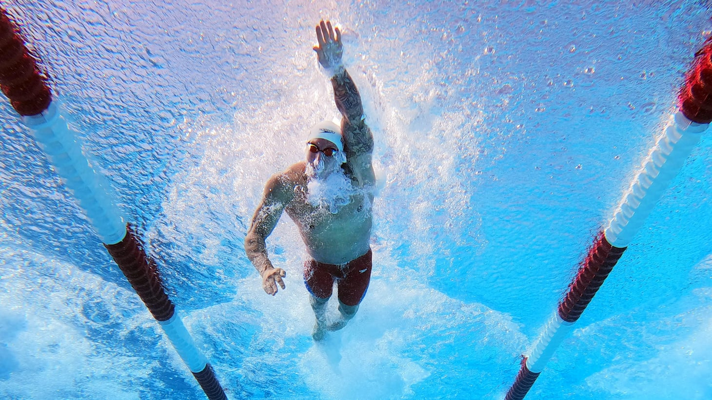

I have been a swimmer for most of my life. In 2023 I swam on the Kansas state
record-holding 400 freestyle relay team and won a state championship, and these days
I train with the Cougar Swim Club at BYU. There is something about the water that no
other sport replicates: it is the only place where the outside world goes completely
silent and all that is left is your stroke count, your breathing pattern, and the
black line on the bottom of the pool.

Caeleb Dressel powering through a freestyle race. (Photo: Olympics.com)
How to Race a 100 Freestyle
People think the 100 free is about raw speed. It is actually about restraint — spend
too much in the first 50 and the last 25 will collect the debt with interest. Here is
my race plan, lap by lap:
The start
Explode off the blocks and hold a tight streamline
Ride the underwater dolphin kicks past the flags — this is free speed
Lap one: controlled speed
Long, full strokes with an early catch and a strong six-beat kick
Breathe to one side; keep the head down and the body line flat
The turn
Accelerate into the wall — never glide
Fast flip turn, tight push-off, and another strong underwater
Lap two: hold it together
Stroke rate up, even as the arms turn to concrete
Finish on a full stroke with the head down — races are lost on a glide
A Bit of History
Competitive swimming is old. The photo below is the start of a race at the 1912
Stockholm Olympics — open water, wool suits, straw hats in the crowd, and judges in
jackets. The athletes dove off a wooden dock. A century later we have super-suits,
underwater cameras, and pools engineered to absorb waves, but the event is the same:
get to the other end first.
Start of a swimming race, 1912 Stockholm Olympics. (Photo: Wikimedia Commons, public domain)
Worth Watching
If you want to understand why people love this sport, watch the men's 4x100 freestyle
relay final from Rio 2016 — Phelps' last freestyle relay, the USA reclaiming the
title, and three and a half minutes of pure electricity:
The Data Behind the Games
Swimming is one of the biggest medal sources at every Summer Olympics. Explore the
interactive dashboard below (built in Tableau by A. Raymer) to see how the medals
stacked up at Paris 2024 — hover, click, and filter: